ggplot(data = gapminder,
aes(x = gdpPercap,
y = lifeExp,
color = continent))+
geom_point(alpha=0.3)+
geom_smooth(method = "lm")+
scale_x_log10(breaks=c(1000,10000, 100000),
label=scales::dollar)+
labs(x = "GDP/Capita",
y = "Life Expectancy (Years)")+
facet_wrap(~continent)+
guides(color = F)+
theme_light()Basic Data Handling Techniques in R
Agenda
5 Important verbs for handling data
View, glimpse, structure, head, tail
select() for column selection
filter() for data filtering
arrange() Data Ordering
mutate() Creating Derived Columns
summarise() Calculating Summary Statistics
group_by()
Data Science
You go into data analysis with the tools you know, not the tools you need
-
The next couple of days are all about giving you the tools you need
- Admittedly, a bit before you know what you need them for
We will extend them as we learn specific models
R
Free and open source
-
A very large community
- Written by statisticians for statistics
- Most packages are written for
Rfirst
Can handle virtually any data format
Makes replication easy
Can integrate into documents (with
R markdown)-
R is a language so it can do everything
- A good stepping stone to learning other languages like Python

Excel (or Stata) Can’t Do This
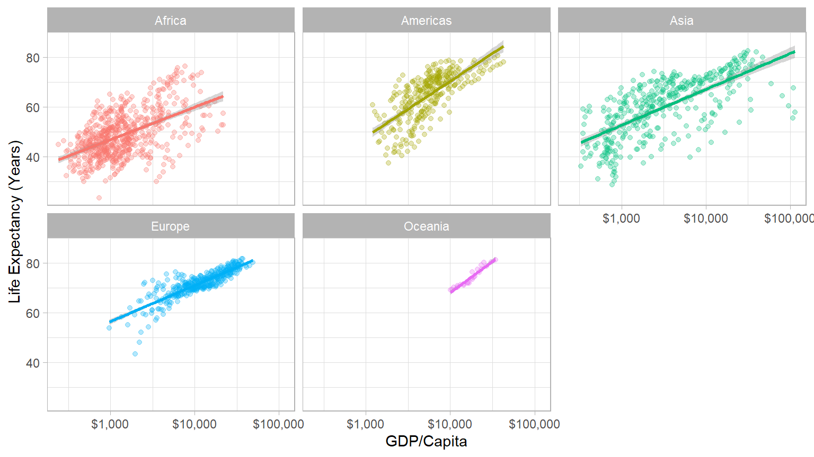
Or This
The average GDP per capita is ` r dollar(mean(gapminder$gdpPercap)) ` with a standard deviation of ` r dollar(sd(gapminder$gdpPercap)) `.
The average GDP per capita is $7,215.33 with a standard deviation of $9,857.45.
Or This
Meet R and R Studio
R and R Studio
R is the programming language that executes commands
-
Could run this from your computer’s shell
- On Windows: Command prompt
- On Mac/Linux: Terminal
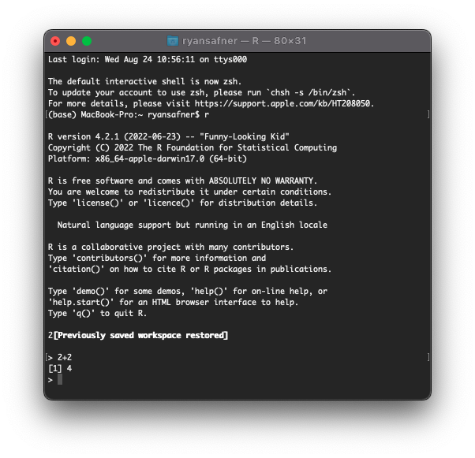
R and R Studio
-
R Studio1 is an integrated development environment (IDE) that makes your coding life a lot easier
- Write code in scripts
- Execute individual commands & scripts
- Auto-complete, highlight syntax
- View data, objects, and plots
- Get help and documentation on commands and functions
- Integrate code into documents with
Quarto
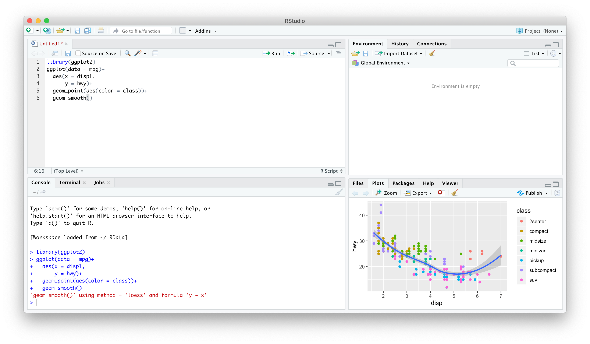
R Studio — Four Panes
Ways to Use R Studio: Using the Console
Type individual commands into the console pane (bottom left)
Great for testing individual commands to see what happens
Not saved! Not reproducible! Not recommended!
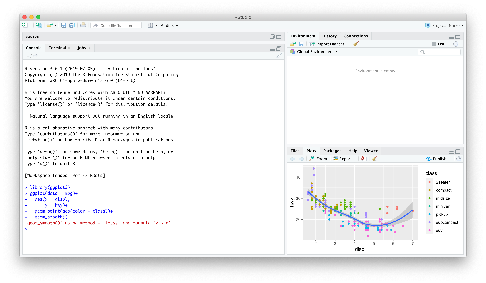
Ways to Use R Studio: Writing a .R Script
Source pane is a text-editor
Make
.Rfiles: all input commands in a single scriptComment with
#Can run any or all of script at once
Can save, reproduce, and send to others!
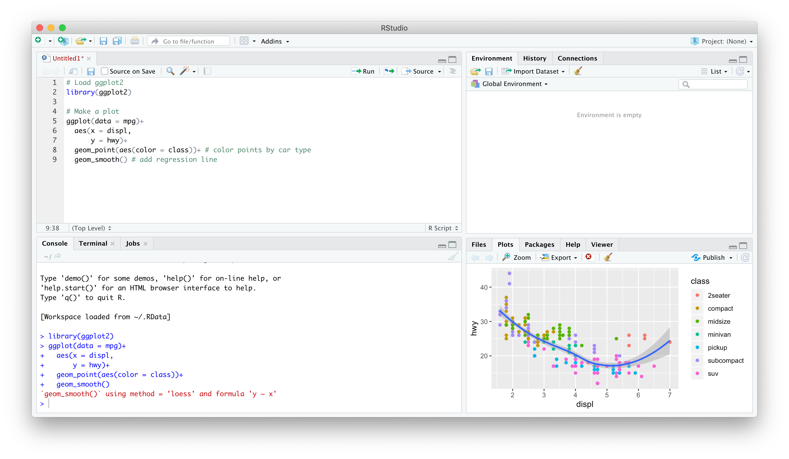
I have discussed the Gapminder dataset in my videos and we shall use it as a reference for this training. It’s available through CRAN, so make sure to install it. Here’s how to load in all required packages:
The dataset is provided in the gapminder library
| country | continent | year | lifeExp | pop | gdpPercap |
|---|---|---|---|---|---|
| Sweden | Europe | 1952 | 71.86 | 7124673 | 8528 |
| Sweden | Europe | 1957 | 72.49 | 7363802 | 9912 |
| Sweden | Europe | 1962 | 73.37 | 7561588 | 12329 |
| Sweden | Europe | 1967 | 74.16 | 7867931 | 15258 |
| Sweden | Europe | 1972 | 74.72 | 8122293 | 17832 |
| Sweden | Europe | 1977 | 75.44 | 8251648 | 18856 |
| Sweden | Europe | 1982 | 76.42 | 8325260 | 20667 |
| Sweden | Europe | 1987 | 77.19 | 8421403 | 23587 |
| Sweden | Europe | 1992 | 78.16 | 8718867 | 23880 |
| Sweden | Europe | 1997 | 79.39 | 8897619 | 25267 |
| Sweden | Europe | 2002 | 80.04 | 8954175 | 29342 |
| Sweden | Europe | 2007 | 80.88 | 9031088 | 33860 |
Information in gapminder data
View command opens data in new worksheet while glimpse lists nature of variables (numeric/character/factor…) and total number of rows and columns.
glimpse(gapminder) # We see that there are 1704 rows for 6 columns and also tells nature of variableRows: 1,704
Columns: 6
$ country <fct> "Afghanistan", "Afghanistan", "Afghanistan", "Afghanistan", …
$ continent <fct> Asia, Asia, Asia, Asia, Asia, Asia, Asia, Asia, Asia, Asia, …
$ year <int> 1952, 1957, 1962, 1967, 1972, 1977, 1982, 1987, 1992, 1997, …
$ lifeExp <dbl> 28.801, 30.332, 31.997, 34.020, 36.088, 38.438, 39.854, 40.8…
$ pop <int> 8425333, 9240934, 10267083, 11537966, 13079460, 14880372, 12…
$ gdpPercap <dbl> 779.4453, 820.8530, 853.1007, 836.1971, 739.9811, 786.1134, …#View(gapminder) # This opens up full data in a new windowFiltering with respect to two variables
One can apply multiple filters
Now we are selecting multiple countries for year 2007.
Filtering data for South Asia countries
Sort data with arrange()
gapminderSA %>% arrange(gdpPercap)##
Note that by default arrange() sorts in ascending order. If we want to sort in descending order, we use the function desc().
gapminderSA %>% arrange(desc(gdpPercap))Life Expectancy in South Asia in 2007
What is the lowest and highest life expectancy among South Asian countries?
What was it in 1952?
mutate() to change existing or create new variable
gapminderSA %>% mutate(pop=pop/1000000)If we want to calculate GDP, we need to multiply gdpPercap by pop.
But wait! Didn’t we just change pop so it’s expressed in millions? No: we never stored the results of our previous command, we simply displayed them. Just as I discussed above, unless you overwrite it, the original gapminder dataset will be unchanged. With this in mind, we can create the gdp variable as follows:
gapminderSA %>% mutate(gdp = pop * gdpPercap)How to calculate new variables
As mentioned above, mutate is used to calculate new variable. Here we have calculated a new variable gdp and then arrange() data and selected top_n(10) countries to see whether higher lifeExpectancy and higher gdp are linked or not?
transmute() keeps only the derived column. Let’s use it in the example from above:
Ordering
arrange data by life expectancy, we use arrange() function
top to bottom, then use arrange(desc()) command as follows:
Top 5
Summarising data
Another feature of dplyr is summarise data
Summarising data by groups
we could get the mean, maximum, and mean life expectancy of the entire dataset.
For example, let’s say we want to get the mean, minimum, and maximum of life expectancy, but instead of for the entire dataset, we want to see it for each year.
dplyr tutorial0
if_else command alongwith mutate
Total Population by Continents in 2007
Percentiles
In general it is assumed that higher the GDP , higher the lifeExp. To test this assumption, lets calculate percentiles of lifeExp. This will indicate how many countries have ranking lower than the current country.
One can notice that all countries are well above 60th percentile on lifeExpectancy when arranged by GDP per capita.
Before you conclude, lets see the bottom side
So it makes sense that higher the GDP, higher the lifeExp. This is not formal testing but exploratory data makes lot of sense here.
Advanced Analysis
Filtering data as done in introductory analysis seems quite difficult if you are not familiar with these simple things. But if you are working with dplyr for quite sometime, there is not anything very advanced or difficult.
For example, let’s say you have to find out the top 10 countries in the 90th percentile regarding life expectancy in 2007. You can reuse some of the logic from the previous sections, but answering this question alone requires multiple filtering and subsetting:
In case you are interested in bottom 10 (worst lifeExp countries from the bottom), use top_n with -10.
Visualizing data to get data insight
Visualizing data is one of the most important aspect of getting data insight and may provide a better data insight than a complicated model. Visualizing large data sets were not an easy task, so researchers relied on mathematical and core econometric/regression models. ggplot2 which is a set of tidyverse package is probably one of the greatest tool for data visualization used in R. In the following sections we are going to visualize gapminder data.
Stat graphics is a mapping of variable to aesthetic attributes of geometric objects.
3 Essential components of ggplot2
- data: dataset containing the variables of interest
- geom: geometric object in question line, point, bars
- aes: aesthetic attributes of an object x/y position, colors, shape, size
Scatter plot

p1+ labs(x = "GDP Per Capita", y = "Life Expectancy in Years",
title = "Economic Growth and Life Expectancy",
subtitle = "Data points are country-years",
caption = "Source: Gapminder.")
Bubbleplot
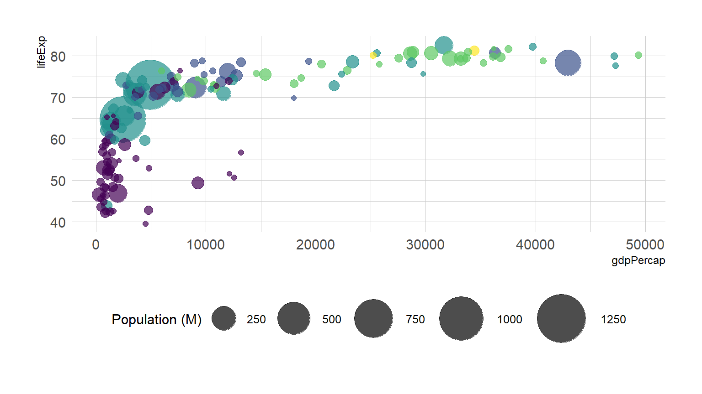
If you just want to highlight the relationship between gbp per capita and life Expectancy you’ve probably done most of the work now. However, it is a good practice to highlight a few interesting dots in this chart to give more insight to the plot:
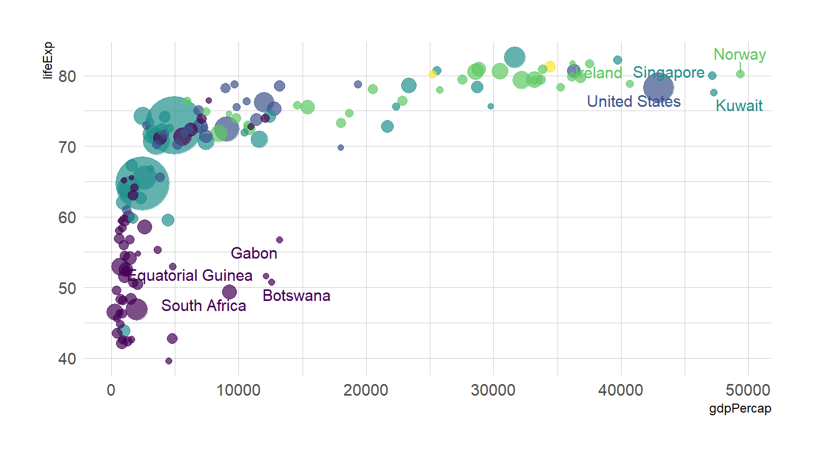
##This is a table of data about a large number of countries, each observed over several years. Let's make a scatterplot with it.
P<-ggplot(data=gapminder,mapping = aes(x=gdpPercap,y=lifeExp))
P+geom_point()+geom_smooth()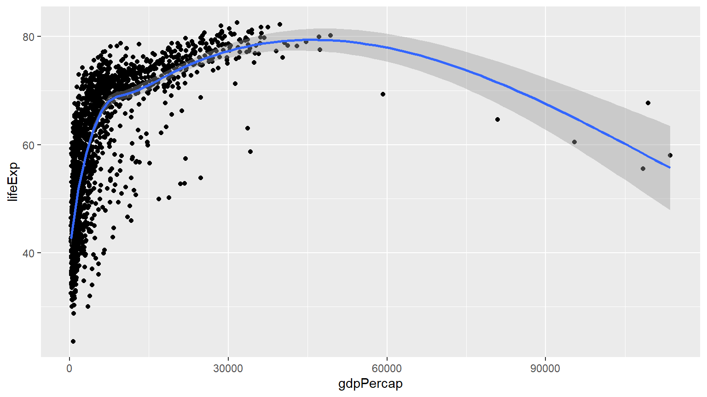
P+geom_point()+geom_smooth(method = "lm")
P+geom_point()+geom_smooth(method = "gam")+scale_x_log10()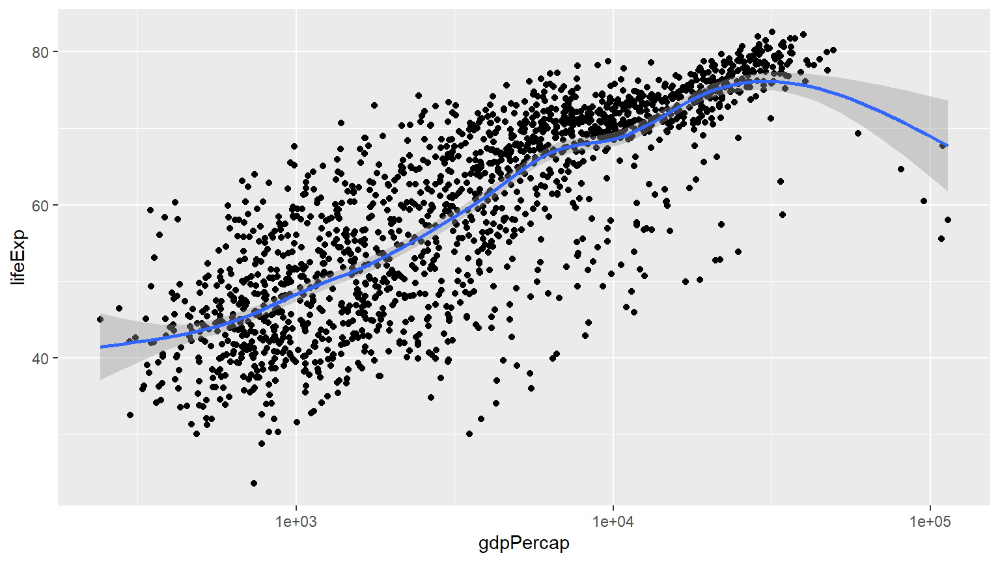
P+geom_point()+geom_smooth(method = "gam")+scale_x_log10(labels=scales::dollar)
P<-ggplot(data=gapminder,mapping = aes(gdpPercap,y=lifeExp,color="purple"))
P+geom_point()+geom_smooth(method = "loess")+scale_x_log10()

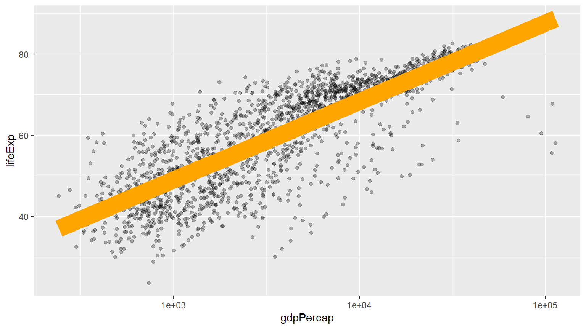
With proper title
P<-ggplot(data=gapminder,mapping = aes(gdpPercap,y=lifeExp))
P+geom_point(alpha=0.3)+
geom_smooth(method = "gam")+
scale_x_log10(labels=scales::dollar)+
labs(x = "GDP Per Capita", y = "Life Expectancy in Years",
title = "Economic Growth and Life Expectancy",
subtitle = "Data points are country-years",
caption = "Source: Gapminder.")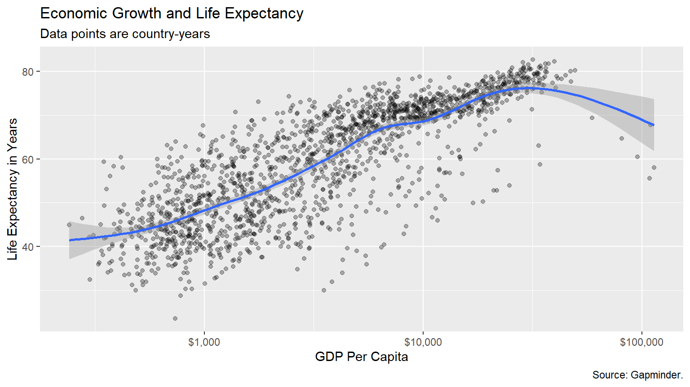
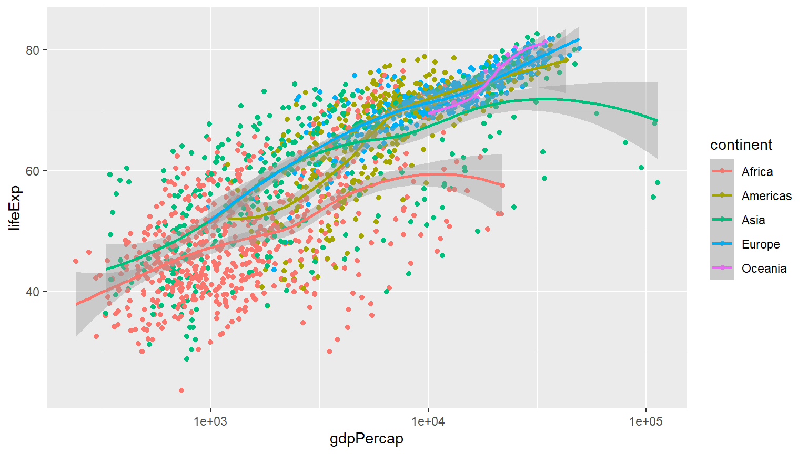


p + geom_point(mapping = aes(color = log(pop))) +
scale_x_log10() 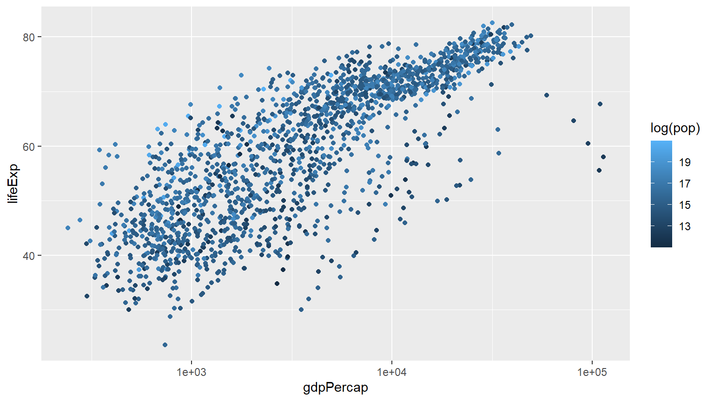
Comparison of 2007 vs 1952 continentwise

p1+labs(x = "GDP Per Capita", y = "Life Expectancy in Years",
title = "Economic Growth and Life Expectancy",
subtitle = "Data points are country-years",
caption = "Source: Gapminder.")
gapminder %>%
select(-pop, -gdpPercap) %>%
filter(year == 2007) %>%
group_by(continent) %>%
summarise(median_life_exp =
median(lifeExp)) %>%
ggplot() +
aes(x = continent) +
aes(y = median_life_exp) +
geom_point(color = "blue", size = 3,
alpha = .4) +
scale_y_continuous(limits = c(0,85)) +
labs(title = "Median life expectency by continent in 2007") +
labs(subtitle = "Data Source: Gapminder package in R") +
labs(x = "") +
labs(y = "Median life expectancy") +
labs(caption = "Zahid Asghar for 'QM4SSH'") +
theme_minimal()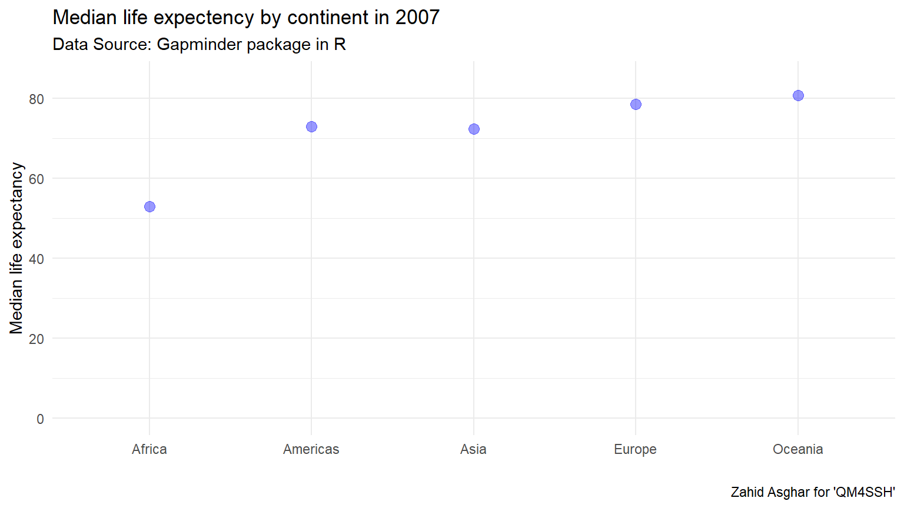
gapminder %>%
filter(year == 1997) %>%
select(country, continent, lifeExp) %>%
mutate(
life_cats =
case_when(lifeExp >= 70 ~ "70+",
lifeExp < 70 ~ "<70")) %>%
ggplot() +
aes(x = continent, y = life_cats) +
geom_jitter(width = .25, height = .25)+
aes(col = continent) +
scale_color_discrete(guide = FALSE) +
theme_dark() +
labs(x = "", y = "") +
labs(title = "Life expectency beyond 70 in 1997")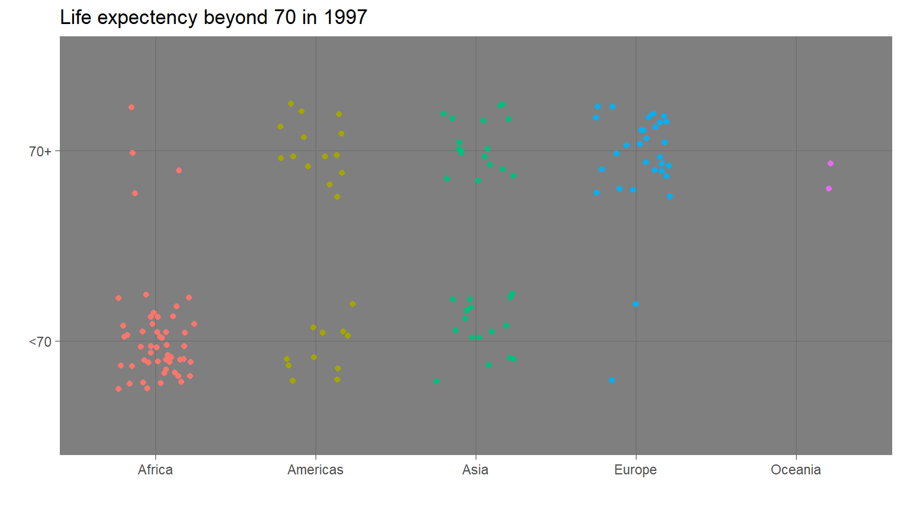
Pakistan
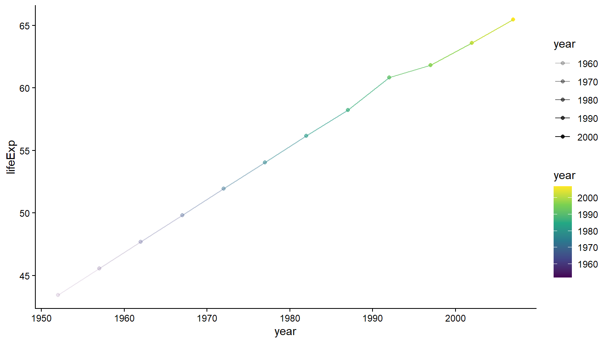
gapminder %>%
filter(year == 2007) %>%
ggplot() +
aes(x = gdpPercap) +
aes(y = lifeExp) +
geom_point(alpha = .5) +
geom_rug(size = 1) +
aes(col = continent) +
aes(col = lifeExp) +
scale_x_log10() +
aes(size = gdpPercap) +
aes(size = pop) +
geom_point(col = "darkgreen", size = 1) +
facet_wrap(~ continent)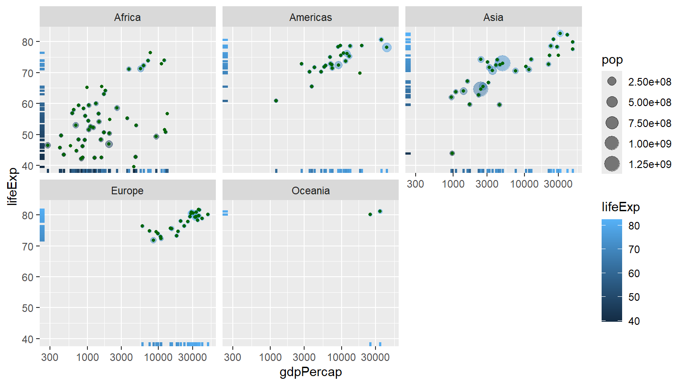